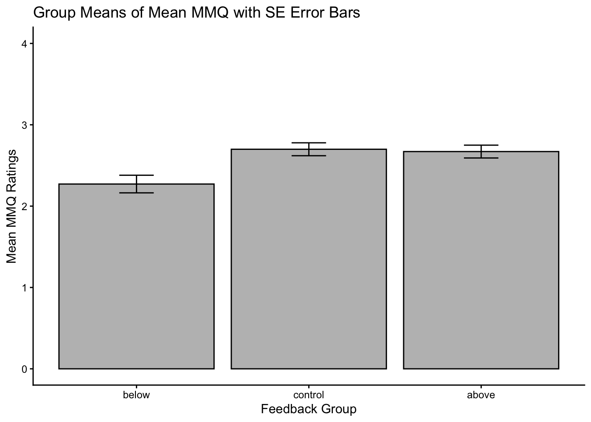
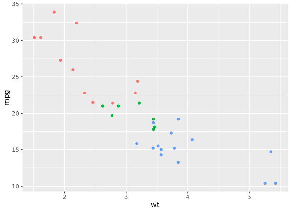
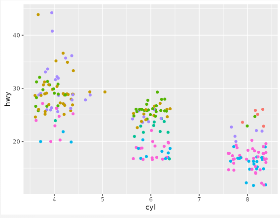
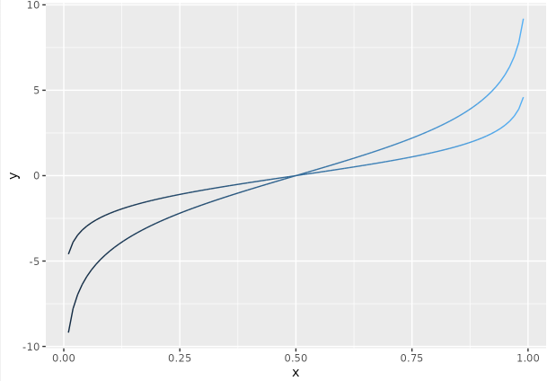
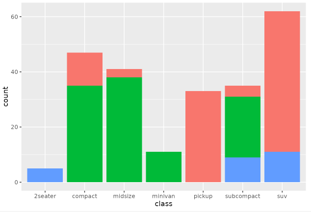
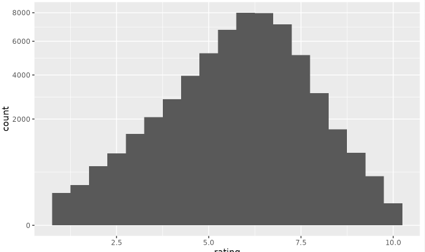
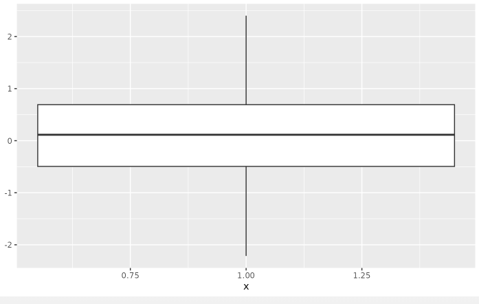

Hands On – Analyze (Einheiten 11 und 12)
Bei Bedarf finden sich hier nochmal die Slides zur EH11:
Und hier die Slides zur EH12:
Lernziele
✅ Visualisierungen mit ggplot2 systematisch aufbauen
✅ Gruppenmittelwerte mit Fehlerbalken visualisieren
✅ Zusammenhänge zwischen zwei metrischen Variablen mit cor.test() prüfen
✅ einfache und multiple Regressionen mit lm() berechnen
✅ zentrale Bestandteile des Regressionsoutputs interpretieren
✅ t-Tests
Important
Für die heutigen Übungen benötigen wir den Wide Datensatz dat_full sowie den Long Datensatz dat_long
Teil 1: Visualisieren mit ggplot2
In diesem Teil wiederholen wir den Aufbau eines ggplot() und reproduzieren zwei Abbildungen aus der Studie von Grinschgl et al. (2021).
Hilfreiche Ressourcen:
📚 R for Data Science - Kapitel 1
📚R for Data Science - Kapitel 11
NoteHäufig verwendete Geoms
| Geom | Funktion | Einsatzbereich | Bild / Beispiel |
|---|---|---|---|
| geom_point() | Streudiagramm | Zusammenhang zwischen zwei numerischen Variablen (x = Var1, y = Var2) |  |
| geom_jitter() | Jitter-Plot | Punkte leicht versetzen, um Überlappung zu vermeiden (v. a. bei kategorialem x) |  |
| geom_line() | Liniendiagramm | Verlauf über eine kontinuierliche oder geordnete x-Achse |  |
| geom_bar() | Balkendiagramm mit gezählten Häufigkeiten | Häufigkeiten oder Aggregationen für Kategorien (x = Gruppe) |  |
| geom_histogram() | Histogramm | Verteilung einer numerischen Variable (x = Wert) |  |
| geom_boxplot() | Boxplot | Verteilungen zwischen Gruppen vergleichen (x = Gruppe, y = Wert) |  |
NoteCheatsheet ggplot2
Im folgenden wollen wir Figure 4 aus Grinschgl et al. (2021) reproduzieren:
Aufgabe 1: Gruppenmittelwerte für den ersten Plot vorbereiten
Bevor wir den Plot erstellen können, müssen wir zunächst einen neuen, kleineren Datensatz vorbereiten. Der Plot soll später pro Feedback-Gruppe einen Balken zeigen. Dafür reicht der ursprüngliche Datensatz dat_full noch nicht aus, weil darin jede Zeile eine einzelne Person darstellt.
Für den Plot brauchen wir stattdessen einen zusammengefassten Datensatz mit einer Zeile pro Gruppe.
Wir möchten also die mittleren MMQ-Ratings für die drei Feedback-Gruppen darstellen. Dafür brauchen wir pro Gruppe:
den Mittelwert von
mmq_meanden Standardfehler dieses Mittelwerts
eine sinnvolle Reihenfolge der Gruppen auf der x-Achse
Instruktionen:
Im Hands-on Block 4 haben wir bereits mit dplyr den MMQ-Skalenwert mmq_mean pro Person berechnet.
Nutze nun die
dplyr-Funktionen, insbesonderegroup_by(), um den durchschnittlichen MMQ-Wert pro Gruppe (group_all) sowie den Standardfehler zu berechnen.Formel Standardfehler: SE = SD / √n
→ Kann so berechnet werden:
se_mmq = sd(mmq_mean) / sqrt(n))Ergänze den Code unten mit den nötigen Angaben. Lege
group_allin deinem neuen Datensatz als Faktor fest mit den Levels in der Reihenfolge: “below”, “control”, “above”.
Note
Der Standardfehler des Mittelwerts (SE) beschreibt, wie stark der geschätzte Stichprobenmittelwert zufällig vom wahren Populationsmittelwert abweichen kann. Er ist damit ein Mass für die Präzision des Mittelwerts.
# mmq_mean pro Experimentalgruppe
group_summary <- dat_full %>%
group_by(XXXX) %>%
summarize(
group_mean_mmq = mean(XXXX, na.rm = TRUE),
se_mmq = sd(XXXX, na.rm = TRUE) / sqrt(n()),
.groups = "drop"
)
# Faktorstufen in der richtigen Reihenfolge definieren
group_summary$group_all <- factor(group_summary$group_all,
levels = c("XXXX", "XXXX", "XXXX"))Aufgabe 2: Balkendiagramm mit Fehlerbalken erstellen
Jetzt erstellen wir den Plot Schritt für Schritt. Ziel ist ein Balkendiagramm, das den mittleren MMQ-Wert pro Feedback-Gruppe inklusive Standardfehler zeigt.
2.1 Starte mit ggplot und dem Datensatz
Erstelle ein neues ggplot-Objekt mit dem Namen plot_base. Weise diesem deinen vorhin erstellten Datensatz group_summary als Datenbasis zu.
2.2 Definiere die Aesthetic Mappings
Lege fest:
group_allsoll auf der x-Achse liegengroup_mean_mmqsoll auf der y-Achse liegen
plot_base_updated_1 <- plot_base +
aes(x = XXXX, y = XXXX)2.3 Füge Balken mit geom_col() hinzu
Damit zeichnest du die Balken für die Gruppenmittelwerte. Setze eine graue Füllfarbe und schwarze Konturen.
color =für Konturenfill =für die Füllfarben der Balken
plot_base_updated_2 <- plot_base_updated_1 +
geom_col(fill = XXXX, color = XXXX)2.4 Füge Fehlerbalken hinzu
Nutze geom_errorbar() und definiere innerhalb von aes():
ymin = mean - se- Füge die passenden Variablen ein.ymax = mean + se- Füge die passenden Variablen ein.
Passe die Breite der Fehlerbalken mit width = an.
plot_base_updated_3 <- plot_base_updated_2 +
geom_errorbar(
aes(ymin = XXXX - XXXX, ymax = XXXX + XXXX),
width = XXXX,
color = "black"
)2.5 Beschrifte den Plot und passe das Design an
Füge mit labs() einen Titel sowie Achsenbeschriftungen hinzu. Ergänze ausserdem theme_classic().
plot_base_updated_4 <- plot_base_updated_3 +
labs(
x = "XXXX",
y = "XXXX",
title = "XXXX"
) +
XXXX2.6 Stelle den Wertebereich der y-Achse ein
Da die MMQ-Ratings von 0 bis 4 reichen, soll die y-Achse den vollständigen Wertebereich zeigen
plot_mmq <- plot_base_updated_4 +
coord_cartesian(ylim = c(XXXX, XXXX))
# Plot ausgeben lassen
plot_mmq2.7 Plot abspeichern
Speichere den Plot als PNG-Datei ab.
Aufgabe 3: Verlaufsplot für subjektive Performance Ratings erstellen
Nun reproduzieren wir einen zweiten Plot aus Grinschgl et al. (2021). Dafür nutzen wir den Long-Datensatz dat_long.
Ziel: Die mittleren subjektiven Performance Ratings sollen für jede Feedback-Gruppe über zwei Messzeitpunkte hinweg dargestellt werden.
Dafür brauchen wir pro Feedback-Gruppe und Messzeitpunkt:
die Anzahl gültiger Beobachtungen
den Mittelwert des Ratings
die Standardabweichung
den Standardfehler
Instruktionen:
Lade zuerst den in der letzten Woche gespeicherten Long-Datensatz.
Ersetze anschliessend die Platzhalter “XXXX” durch die erforderlichen Werte, um den Plot zu reproduzieren.
descriptives <- dat_long |>
group_by(XXXX, XXXX) |>
summarize(
N = sum(!is.na(rating)),
mean_d = mean(XXXX, na.rm = TRUE),
sd_d = sd(XXXX, na.rm = TRUE),
se_d = sd_d / sqrt(N),
.groups = "drop"
)
descriptives$group_all <- factor(descriptives$group_all, c("above", "control", "below"))
rate_plot <- descriptives |>
ggplot(aes(
x = XXXX,
y = XXXX,
group = XXXX))
rate_plot +
geom_line(aes(color = group_all, linetype = group_all), linewidth = 1.2) +
geom_errorbar(aes(ymin = mean_d - se_d, ymax = mean_d + se_d), width = .1) +
scale_color_manual(values = c("green4", "red", "black")) +
theme_classic() +
labs(
title = "XXXXX",
x = "XXXX",
y = "XXXX"
) +
theme(
plot.title = element_text(hjust = 0.5, size = 12, face = "bold"),
axis.text = element_text(size = 11),
axis.title = element_text(size = 14)
)
rate_plot3.1 Plot abspeichern
Speichere den Plot als PNG-Datei ab.
Teil 2: Inferenzstatistik
In diesem Teil gehen wir von der Visualisierung zur statistischen Prüfung über. Wir fragen also nicht nur, ob ein Muster in den Daten sichtbar ist, sondern ob ein Zusammenhang statistisch geprüft werden kann.
NoteCheatsheets Statistik
Aufgabe 4: Korrelationen berechnen und interpretieren
Wir untersuchen den Zusammenhang zwischen zwei metrischen Variablen aus dem Wide-Datensatz:
mean_d1_all: durchschnittliche Dauer der ersten Fensteröffnung (in Sekunden) über die 20 Test-Trials des PCT hinwegmean_d_all: durchschnittliche Trial-Dauer (in Sekunden) über die 20 Test-rials des PCT hinweg
4.1 Erstelle zuerst einen Scatterplot
Bevor du eine Korrelation berechnest, visualisiere den Zusammenhang.
dat_full |>
ggplot(aes(x = XXXX, y = XXXX)) +
geom_point() +
geom_smooth(method = "lm", se = FALSE) +
theme_classic() +
labs(
x = "Duration until first opening",
y = "Total trial duration",
title = "Association between first opening duration and total trial duration"
)4.2 Berechne die Pearson-Korrelation
Berechne nun die Korrelation mit cor.test(). Du solltest den Code dazu schon aus vorherigen Übungen kennen.
4.3 Interpretiere den Output
Beantworte anhand des Outputs:
Ist der Zusammenhang positiv oder negativ?
Wie stark ist der Zusammenhang ungefähr?
Ist der Zusammenhang statistisch signifikant?
Wie viele Freiheitsgrade werden angegeben?
Passt das Ergebnis zu deiner Erwartung aus dem Scatterplot?
4.4 Berechne eine einseitige Korrelation und eine Spearman-Korrelation
Rufe zunächst die Hilfefunktion auf:
?cor.testBerechne anschliessend (für die gleichen Varialben wie bei Aufgabe 4.2):
eine einseitige Pearson-Korrelation für einen positiven Zusammenhang
eine Spearman-Korrelation als nicht-prametrische Alternative
Kurze Wiederholung: Korrelationen
Eine Korrelation beschreibt den Zusammenhang zwischen zwei Variablen.
r > 0: positiver Zusammenhang
r < 0: negativer Zusammenhang
r ≈ 0: kein oder kaum linearer Zusammenhang
Der Korrelationskoeffizient liegt zwischen -1 und +1. Je nöher der Wert an -1 oder +1 liegt, desto stärker ist der Zusammenhang.
Für eine Pearson-Korrelation sollten die Variablen metrisch sein, der Zusammenhang sollte ungefähr linear sein und starke Ausreisser sollten vermieden oder begründet untersucht werden. Wenn diese Annahmen nicht gut erfüllt sind, kann eine Spearman-Korrelation sinnvoller sein.
Regressionen
NoteTabelle: Funktionen für Regressionen und verwandte Analysen in R
| Funktion | Beschreibung |
|---|---|
| lm(y ~ x) | Einfache lineare Regression mit einer abhängigen Variablen y und einem Prädiktor x. |
| lm(y ~ x1 + x2) | Multiple Regression mit einer abhängigen Variablen y und zwei Prädiktoren x1 und x2. |
| summary() | Gibt die Ergebnisse der Regressionsanalyse für ein Regressionsmodell aus. |
| confint() | Konfidenzintervalle für die Regressionskoeffizienten. |
| fitted() | Vorhergesagte Werte des Regressionsmodells. |
| resid() | Residuen des Regressionsmodells. |
| predict() | Vorhergesagte Werte für bestimmte Werte der Prädiktorvariablen. |
| anova() | Vergleicht die Determinationskoeffizienten zweier Regressionsmodelle mit einem F-Test. |
| vif() * | Variance Inflation Factors (VIF) für jeden Prädiktor; aus dem car-Paket. |
* aus zusätzlichen Paketen
Aufgabe 5: Einfache lineare Regression
Eine Korrelation prüft, wie stark zwei Variablen zusammenhängen. Eine Regression formuliert den Zusammenhang gerichteter:
Kann eine Variable durch eine andere Variable vorhergesagt werden?
Wir verwenden nun dieselben beiden Variablen wie bei der Korrelation und berechnen eine einfache lineare Regression.
Abhängige Variable / Outcome:
mean_d1_allPrädiktor:
mean_d_all
5.1 Berechne das Regressionsmodell
model_1 <- lm(XXXX ~ XXXX, data = dat_full)
summary(model_1)5.2 Interpretiere den Output
Orientiere dich an folgenden Fragen:
Was ist die abhängige Variable?
Was ist der Prädiktor?
Ist der Regressionskoeffizient positiv oder negativ?
Ist der Prädiktor statistisch signifikant?
Wie viel Varianz erklärt das Modell ungefähr? Nutze dafür
Multiple R-squared.Wie verhält sich der Determinantionskoeffizient der Regression (R²) zum Korrelationskoeffizienten der Korrelation (aus Übung 2.4)?
Aufgabe 6: Multiple lineare Regression
Nun ergänzen wir das Modell um einen zweiten Prädiktor. Dadurch prüfen wir, ob beide Prädiktoren gemeinsam zur Vorhersage der abhängigen Variable beitragen.
Abhängige Variable / Outcome:
mean_d1_allPrädiktor 1:
mean_d_allPrädiktor 2:
mean_rl_all
6.1 Berechne das multiple Regressionsmodell
model_2 <- lm(XXXX ~ XXXX + XXXX, data = dat_full)
summary(model_2)6.2 Prüfe Multikollinearität mit vif()
Bei multipler Regression sollten Prädiktoren nicht zu stark miteinander zusammenhängen. Eine Möglichkeit zur Prüfung ist der Variance Inflation Factor, kurz VIF.
vif(XXXX)Wie interpretiert man VIF-Werte?
Der VIF sollte nicht zu hoch sein. Häufig verwendete Daumenregeln sind:
VIF nahe 1: unproblematisch
VIF > 5: mögliche Multikollinearität prüfen
VIF > 10: deutlicher Hinweis auf problematische Multikollinearität
6.3 Interpretiere das multiple Modell
Beantworte anhand des Outputs:
Welche Variable wird vorhergesagt?
Welche Prädiktoren sind im Modell enthalten?
Welche Prädiktoren sind statistisch signifikant?
Wie viel Varianz erklärt das Model insgesamt?
Wie unterscheidet sich R² im Vergleich zu
model_1?
6.4 Berechne Konfidenzintervalle der Koeffizienten
Berechne nun die 95%-Konfidenzintervalle der Regressionskoeffizienten.
confint(XXXX)Wie interpretiert man Konfidenzintervalle?
Ein 95%-Konfidenzintervall beschreibt einen Bereich plausibler Werte für den wahren Regressionskoeffizienten. Wenn das 95%-KI die 0 nicht enthält, passt das zu einem zweiseitig signifikanten Test auf dem 5%.Niveau.
Aufgabe 7: Modellvergleich mit anova()
Bei der hierarchischen Regression vergleichen wir ein einfacheres Modell mit einem komplexeren Modell. Dadurch prüfen wir, ob zusätzliche Prädiktoren die Vorhersage verbessern.
Vergleiche model_1 und model_2 mit anova().
Beantworte:
- Wird durch den zusätzlichen Prädiktor signifikant mehr Varianz erklärt?
anova(XXXX, XXXX)Freiwillige Zusatzaufgabe: Einfache logistische Regression
Diese Aufgabe ist freiwillig und geht über die Inhalte der Einheit hinaus. Sie eignet sich, wenn du bereits sicher mit linearer Regression bist.
Fragestellung:
Kann das Offloading-Verhalten (mean_rl_all) die Strategiewahl vorhersagen?
👉 Da glm(..., family = binomial) eine binäre abhängige Variable benötigt, entfernen wir Strategie 3 und kodieren die verbleibenden Strategien in 0 und 1 um.
# Vorbereiten Daten
log_reg <- dat_full |>
filter(XXXX != XXXX) |>
mutate(
strategy_bin = if_else(XXXX == XXXX, 0, 1)
)
# Berechnung Modell
model_log <- glm(
XXXX ~ XXXX,
data = XXXX,
family = XXXX
)
summary(model_log)Disclaimer!
Die bisherigen Aufgaben waren rein für Übungszwecke. Für die Reproduktion des Grinschgl et al. Papers in eurem Abschlussprojekt sind keine Korrelationen und Regressionen notwendig
t-Tests
Während Korrelation und Regression Zusammenhänge untersuchen, prüfen t-Tests Unterschiede in Mittelwerten.
NoteTabelle: Funktionen für t-Tests und verwandte Analysen in R
| Funktion | Beschreibung |
|---|---|
| t.test | Allgemeine Funktion für verschiedene t-Tests: Ein-Stichproben-t-Test, t-Test für unabhängige Stichproben und t-Test für abhängige Stichproben. |
| t.test(av, mu = x) | Ein-Stichproben-t-Test. av = abhängige Variable. x = Vergleichswert der Population. |
| t.test(av ~ uv) | Welch-t-Test für unabhängige Stichproben. av = abhängige Variable, uv = Gruppenvariable. |
| t.test(av ~ uv, var.equal = TRUE) | Klassischer t-Test für unabhängige Stichproben (Varianzgleichheit voraussgesetzt). |
| t.test(av1, av2, paired = TRUE) | t-Test für abhängige Stichproben (z. B. Prä–Post). av1 und av2 = gemessene Variablen. |
| leveneTest(av, uv) * | Levene-Test auf Varianzhomogenität für unabhängige Gruppen. Aus dem car-Paket. |
| effsize::cohen.d() * | Berechnet die standardisierte Effektgröße Cohen’s d + Konfidenzintervall. Aus dem effsize-Paket. |
* Funktionen aus zusätzlichen Paketen.
- Paket
„effsize“installieren und laden.
Aufgabe 8: t-Test für unabhängige Stichproben
Fragestellung: Unterscheiden sich die pre4-Ratings zwischen den Gruppen above und below?
8.1 Daten vorbereiten
Wir betrachten nur die zwei Gruppen above und below.
dat_full_below_above <- dat_full |>
filter(group_all %in% c("above", "below")) |>
mutate(group_all = factor(group_all))8.2 Varianzhomogenität prüfen (Levene-Test)
Bevor wir den t-Test durchführen, prüfen wir, ob die Varianzen der Gruppen gleich sind.
leveneTest(XXXX ~ XXXX, data = XXXX)8.3 t-Test berechnen
Berechne nun den entsprechenden t-Test mit t.test(). Du kannst auch die Hilfefunktion zu Rate ziehen. Versuche dann den Output zu verstehen bzw. das Ergebnis zu interpretieren.
Tipp: Wenn die Varianzhomogenität gegeben ist (d.h. der Levene-Test nicht signifikant ist), muss man var.equal = TRUE angeben, ansonsten wird ein Welch t-Test (bei Varianzungleichheit) berechnet.
8.4 Effektstärke berechnen
Zusätzlich zur Signifikanz berechnen wir die Effektstärke (Cohen’s d).
effsize::cohen.d(XXXX ~ XXXX, data = XXXX)👉 Und schon haben wir einen der Post-Hoc t-Tests für die 2x3 ANOVA aus Grinschgl et al. (2020) berechnet (notwendig für das Abschlussprojekt)
Aufgabe 9: t-Tests für abhängige Stichproben
Fragestellung: Verändert sich das Rating innerhalb der control-Gruppe von pre1 zu pre4?
9.1 Daten filtern
dat_full_control <- dat_full |>
filter(group_all == "control")9.2 Gepaarten t-Test berechnen
Hier vergleichen wir zwei Messzeitpunkte derselben Personen.
t.test(XXXX$XXXX, XXXXX$XXXX, paired = XXXX)9.3 Gerichteten t-Test berechnen
Wenn wir eine gerichtete Hypothese haben (z.B. pre4 > pre1), verwenden wir alternative = "greater".
⚠️ Wichtig: Die Reihenfolge der Variablen bestimmt die Richtung!
t.test(dat_full_control$XXXX, dat_full_control$XXXX, paired = XXXX, alternative = "XXXX")Am Ende deiner Übungen - vergiss nicht dein Skript abzuspeichern! 😉
Grinschgl, Sandra, Hauke S. Meyerhoff, Stephan Schwan, and Frank Papenmeier. 2021. “From Metacognitive Beliefs to Strategy Selection: Does Fake Performance Feedback Influence Cognitive Offloading?” Psychological Research 85 (7): 2654–66. https://doi.org/10.1007/s00426-020-01435-9.